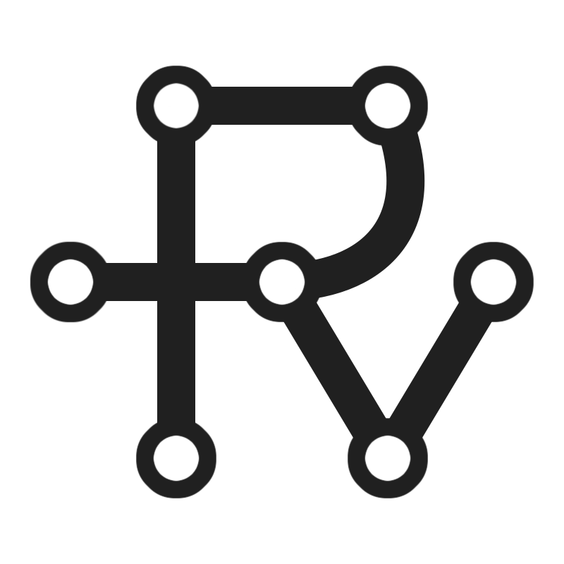

Projects
|  | RESP is a psychological first aid kit for use by first responders. Its main purpose is to reunite family and friends who have been displaced by natural disaster. RESP was initially developed at AngelHack Manhattan 2019 where it recieved the IBM Call for Code prize. This version was built in Django, and can be found here. The most recent version of this app is built in React, with MongoDB providing database services. |
| MetaCleanup is a command line tool for cleaning your music library. Put simply, it automatically tags and renames your music files with proper data. It is written in Python, uses the Discogs API to obtain accurate album data, and uses mutagen to edit file metadata. |